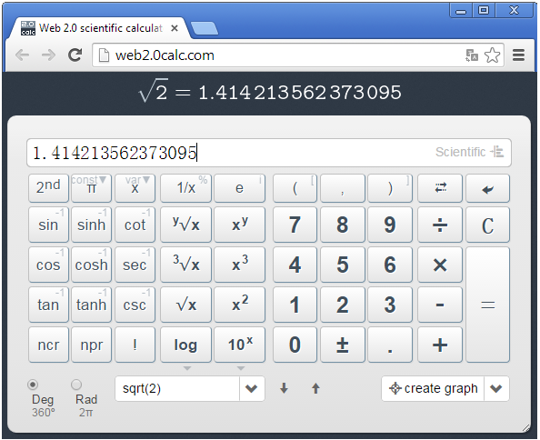
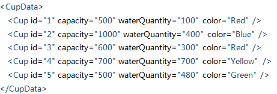
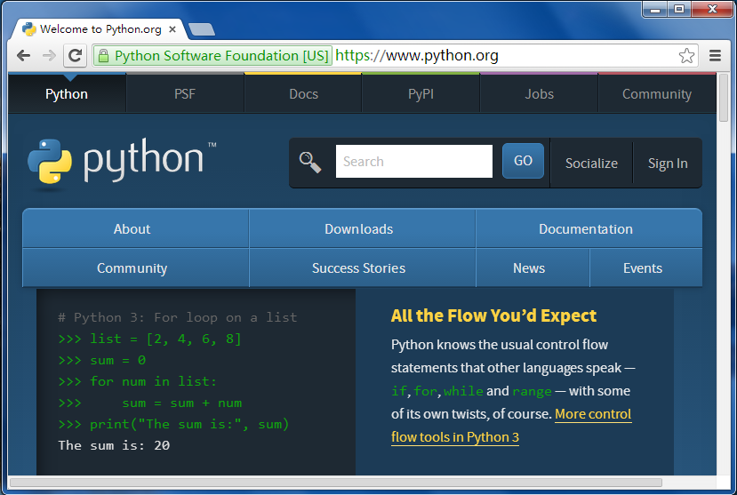
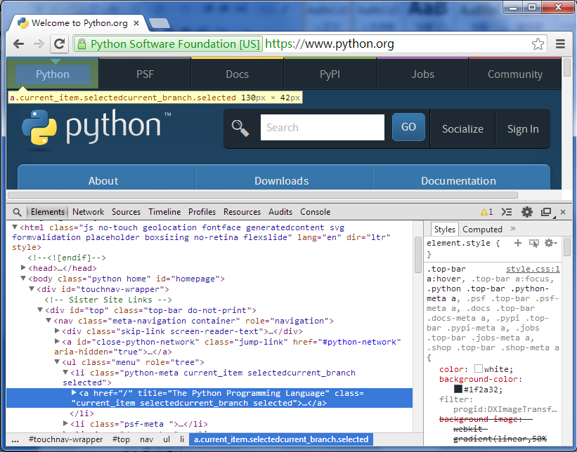
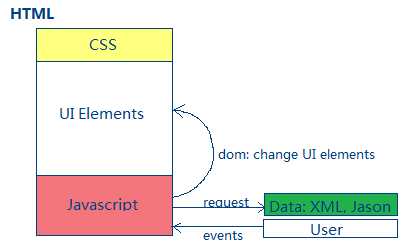
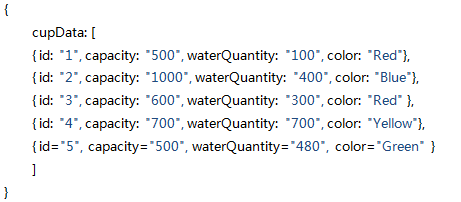
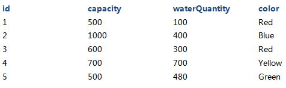
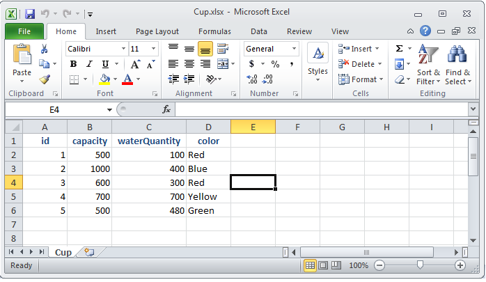
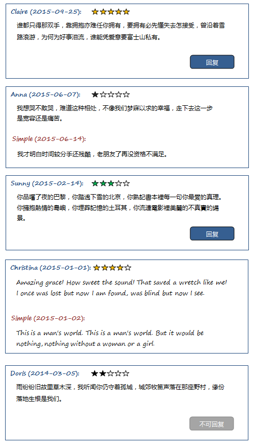

Web界面：与浏览器进行交流，只要向浏览器输入网址就可以开启程序 
全感界面：相信在不久的将来就会有全感系统，能让人用全部感官与程序交互。游戏如同真实。
从某个角度来说，模型是比界面更本质，更关键的东西。漂亮的界面要建立在正确的模型上才有意义。就好比漂亮的衣服穿在人身上才有意义，穿在冰箱上只是徒然。有了人，就可以变换不同的衣服。有了平方根的算法模型，我们就可以打造自己的界面。
XML (Extensible Markup Language):
我们该怎样把杯子(Cup)这种结构性的数据存下来呢？
”500,100,Red;1000,400,Blue;600,300,Red;700,700,Yellow;500,480,Green”这种线性格式似乎过于痛苦。我们需要一种结构化格式比如XML，让数据变得友好：

XML文件本质上也是纯文本文件，通过添加额外的解释性标签使数据变得明朗。
HTML (Hypertext Markup Language) ：
网络站点通过传送HTML文件给我们的浏览器，浏览器进而为我们解释并展示其内容， 于是我们看到了网页。HTML 如同XML，其实也是格式化的纯文本。
在chrome浏览器输入网址:www.python.org，于是我们看到网页： 
按下键F12, 我们可以看到网页的HTML文本： 
XML关心的是数据内容，标签可自定义，比如我们的
HTML模型 
Javascript将返回的数据Data更新到UI。对于Javascript来说，Jason是比XML更简便的数据格式。比如： 
数据库(Database):
数据库以表格（非纯文本）的方式存取数据，如表Cup

它提供了高效的方式管理海量数据，比如查询红色的杯子的语句：
select id, capacity, waterQuantity, color from Cup where color = “Red”
Excel 也是不错的数据源，它既有友好的用户编辑界面，又有方便的程序API。 
当我们说抛硬币的正面概率是1/2，我们并不能预测下一次正面是否出现，我们只是知道当抛硬币次数越来越多，正面的次数的比例越接近1/2。尽管我们这次赢（或输）了，但随着次数越来越多，我们终究打平。这有些令人沮丧。但如果这是一枚特殊的硬币，哪怕把正面的概率变为50.001%，那么次数越多，我们将赢得越多。你能想到那些社会现象本质其实就是“抛特殊硬币”吗？ 你记得蝴蝶效应吗？
Random可以产生一点点“智能”，让程序陪我们玩石头剪刀布游戏。
简单来说，测试就是验证实际结果(actual)与期待(expected)是否一致: verify (expected, actual)。expected 是根据我们对产品的理解(specification)设置的。actual 则是通过一系列操作actions获得的结果。复杂一点的测试需要准备测试数据test data。我们还需要Logger把test case打印和记录下来（包括测试数据，期待值，一系列操作，实际结果，验证结果）以便我们分析结果。
testCase:
testData = getTestData();
expected = getExpected(testData);
actual = actions(testData);
verify(expected, actual);
我们试一下为fibonacci写test cases。Fibonacci的输入参数n是非负整数，于是我们至少要测三种场景n是负整数，n是特别的0，n是正整数。因为整数是无法穷举的（不过大多数系统提供的整数都有最大值），所以我们必需细心选择有代表性的值。比如n = -1, 0, 1, 2, 10, 100, 1000, 10000, int.maxValue.
Test Case 场景：
1.按值区分，我们可以为每一个值单独写一个test case，总共9个test cases。
2.按逻辑区分，因为非负数的test cases逻辑是一样的，可以合并为一个test case，于是变为2个test cases。 如果不一定要覆盖[0,1,2,10,100,1000,10000,int.maxValue], 我们可以随机选取非负整数进行测试。
期待值设置：
按照fibonacci定义，我们很容易设置fibonacci(0) 和fibonacci(1)的期待值为0和1，但怎么能够轻易设置fibonacci(10) 甚至fibonacci(10000)的期待值呢？
1.手工运算是不可能的，可以问问我们身边的朋友或者无所不知的Google， 然后记下来。
2.要不我们根据fibonacci的定义，写一个函数帮我们运算。哈哈，我简直太机智了！等等，你的意思是说，我要写一个fibonacci函数来验证那个fibonacci函数对不对？！
3.我又想到一个机智的做法，先检验fibonacci(0)和fibonacci(1)是否正确，然后检验fibonacci(n)是否等于fibonacci(n-1)和fibonacci(n-2)之和。我简直太机智了！
测试的困境：数据
假设我们测试，早于2015-01-01的酒店住后评价因为太旧不再可以回复，需要哪些测试用例呢？
1. 晚于2015-01-01的任意一条评价，可以回复；
2. 2015-01-01的评价，可以回复；
3. 2014-12-31的评价，不可回复；
4. 早于2014-12-31的评价，不可回复。
可是我们没有2014-12-31的评价，而唯一的一条2015-01-01的评价已经被回复了，怎么办呢？
1. 修改已存在的数据，把2015-01-01的那条评价的回复从数据源中删掉，让它变为未回复，把随便一条评价的时间改为2014-12-31。这样容易破坏数据的一致性，比如评价的时间与入住时间不符等，从而让其变为脏数据，带来隐患。
2. 干脆忽略2015-01-01和2014-12-31这两种边界情况得了，假定系统不会出问题。可是极端一点，早于2015-01-01的评价在测试环境中全被清掉了，难道就只测“晚于2015-01-01”一种情况，然后祈祷系统不会出问题？数据就这么理所当然地成为了测试的障碍？
3. 仔细想想，通常界面并非直接存取数据源，而是通过通用的数据服务接口来管理数据的，那么只要遵循了服务接口协定的数据格式，比如xml，json，我们就可以模拟(mock)服务层，返回任何我们想要的假数据，安然测试各种情况。
